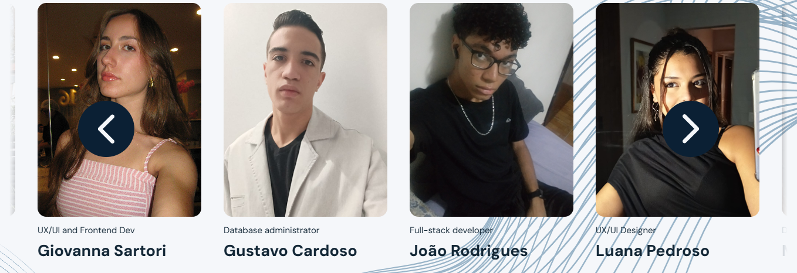

Equipe — trajeto de retorno por trás
Observe o integrante que atravessa a fila em uma camada posterior às outras fotos. As setas mantêm a posição e o tamanho aprovados.
1º ano
2º ano
Estado final após a transição

Observe o integrante que atravessa a fila em uma camada posterior às outras fotos. As setas mantêm a posição e o tamanho aprovados.
